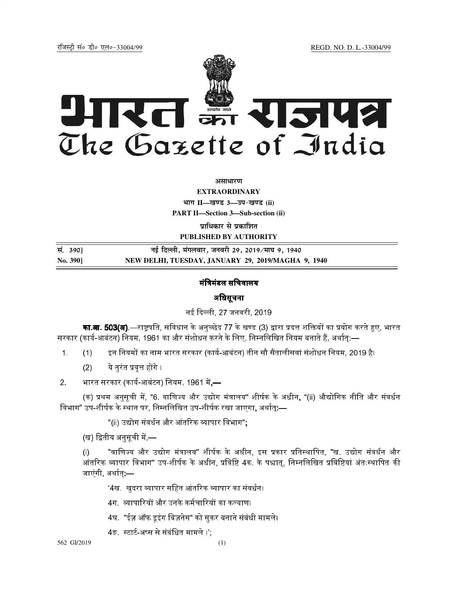
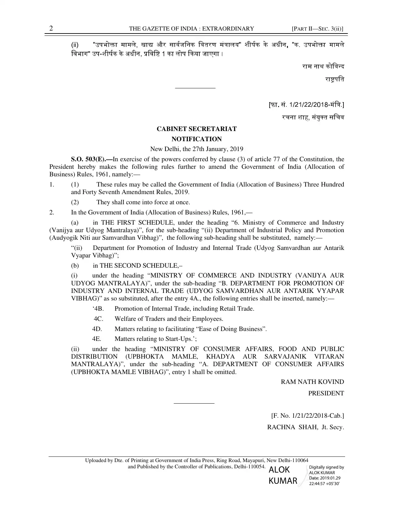

Amendment #347 (S.O. 503 (E), 2019)
3 changes: 1 to the First Schedule, 2 to the Second Schedule. 3 applied
The order, page by page
Page 1 of 2

Page 2 of 2

123Schedule 1 › Ministry of Commerce and Industry › Department of Industrial Policy and Promotion
- ii. Department for Promotion of Industry and Internal Trade
applied at schedule 1 › ministry 6 › department ii in the Rules after #347
after Schedule 2 › MINISTRY OF COMMERCE AND INDUSTRY › DEPARTMENT FOR PROMOTION OF INDUSTRY AND INTERNAL TRADE › entry 4A
- 4B. Promotion of Internal Trade, including Retail Trade.
- 4C. Welfare of Traders and their Employees.
- 4D. Matters relating to facilitating “Ease of Doing Business
- 4E. Matters relating to Start-Ups.
applied at schedule 2 › ministry MINISTRY OF COMMERCE AND INDUSTRY › department B › group_heading I › entry 4B in the Rules after #347
states inferred renamed as referred
Schedule 2 › MINISTRY OF CONSUMER AFFAIRS, FOOD AND PUBLIC DISTRIBUTION › DEPARTMENT OF CONSUMER AFFAIRS › entry 1
applied at schedule 2 › ministry MINISTRY OF CONSUMER AFFAIRS, FOOD AND PUBLIC DISTRIBUTION › department A › entry 1 in the Rules after #347
How this document was read
Changes placed by an inference rule
| Change | Rule | Status | What |
|---|---|---|---|
| 2 | renamed_as_referred | accepted | change 2: schedule 2 › ministry MINISTRY OF COMMERCE AND INDUSTRY › department B renamed DEPARTMENT FOR PROMOTION OF INDUSTRY AND INTERNAL TRADE, as change 1 renamed it in schedule 1 |
From the Government of India (Allocation of Business) Rules, 1961 and their amendments, as published by the Cabinet Secretariat (cabsec.gov.in), read by orgpedia. The readings of the older scanned gazettes have known gaps.